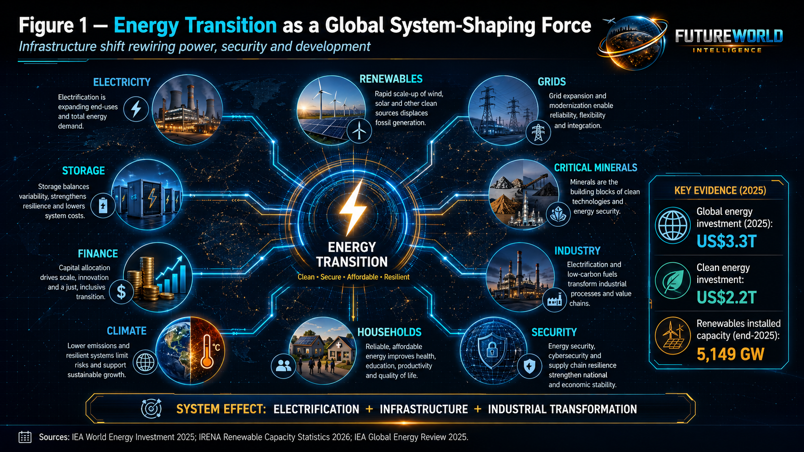
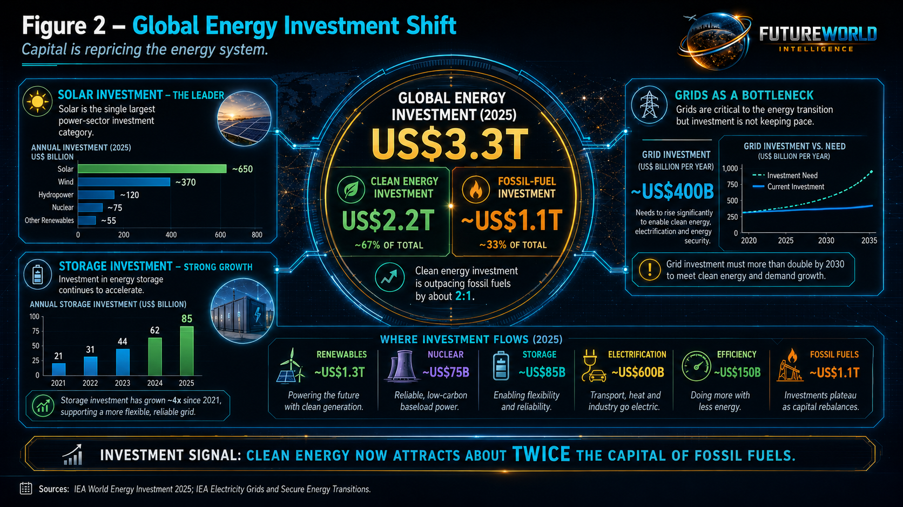
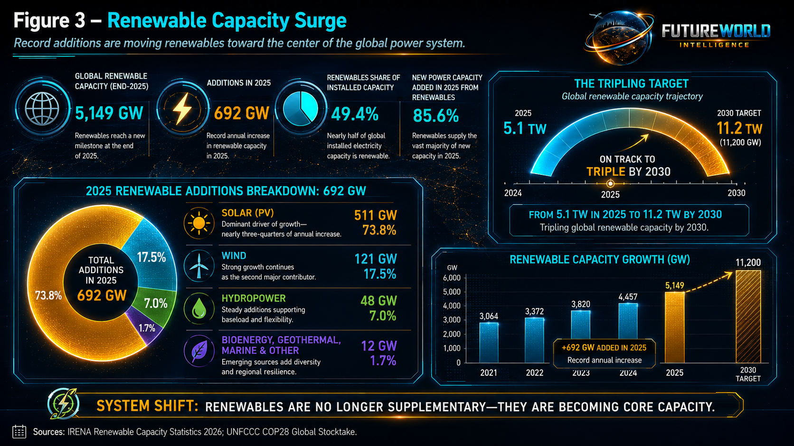
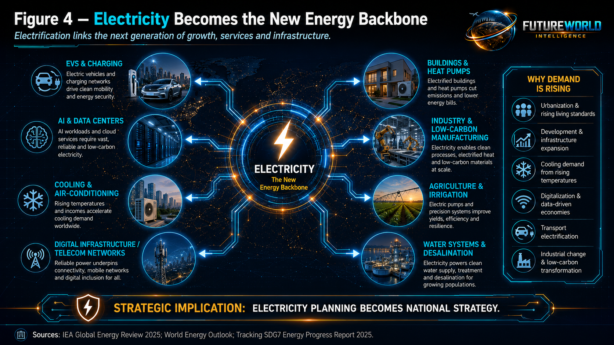
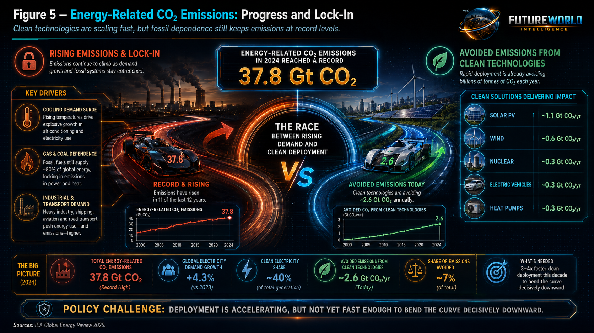
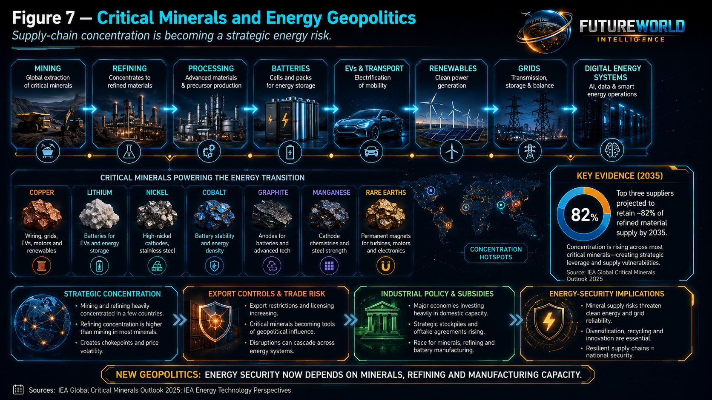
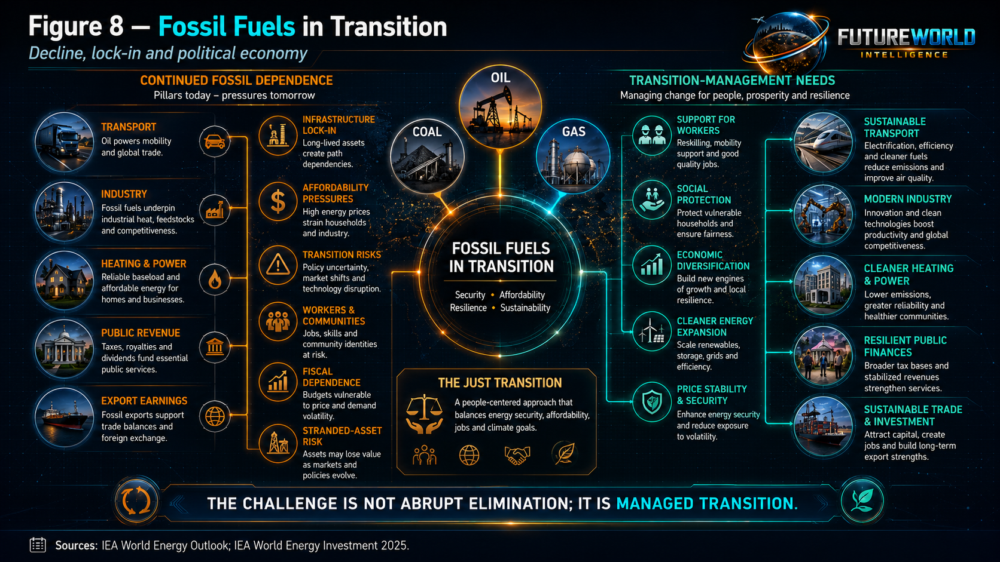
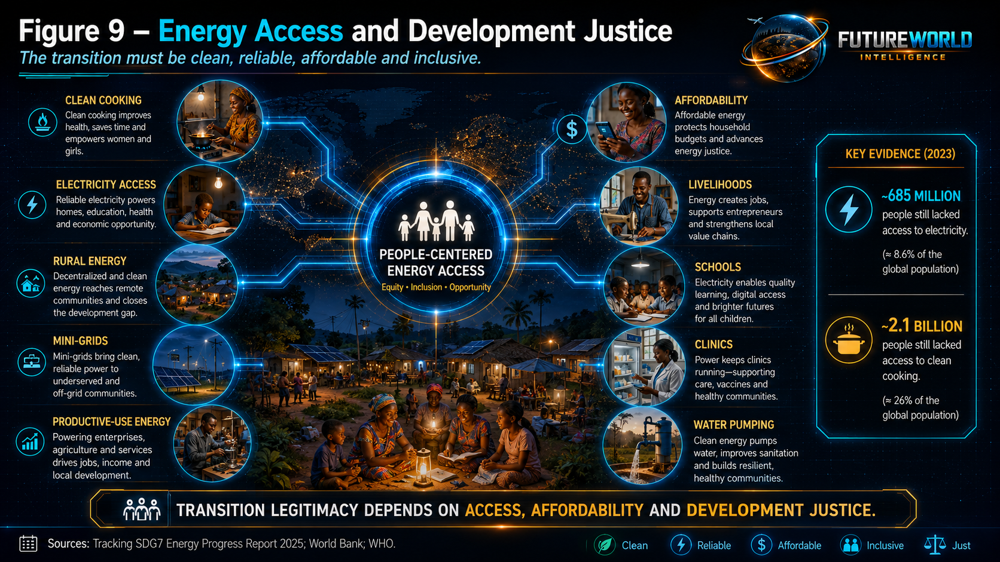
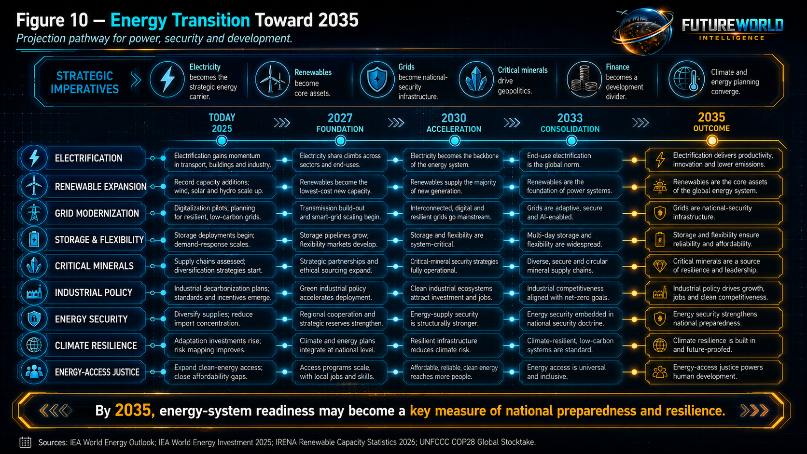

Document Control and Responsible Use Statement
This report is prepared for educational, policy-briefing, public-intelligence, and strategic foresight purposes, aimed at informing policymakers, public officials, researchers, and strategic stakeholders about the evidence underpinning the global energy transition as a defining force shaping the future toward 2035. It does not constitute investment, engineering, legal, or advisory guidance, nor does it represent the official position of any institution referenced herein.
The term energy transition is employed in a comprehensive systems-policy sense, encompassing the structural transformation of energy production, transmission, distribution, storage, consumption, financing, and governance. While renewable electricity is central, the transition extends to grids, storage, nuclear power, efficiency, electrification, clean cooking, low-emission fuels, critical minerals, carbon management, industrial decarbonization, transport electrification, digital energy systems, and the evolving strategic role of fossil fuels.
The report distinguishes between empirical evidence, analytical interpretation, and forward-looking projection. Quantifiable indicators include investment flows, renewable capacity, electricity demand, emissions, grid development, and mineral concentration. By contrast, assessments regarding fossil-fuel displacement, technological trajectories, supply-chain evolution, industrial competitiveness, and system resilience toward 2035 are interpretive in nature and should be understood as strategic analysis rather than deterministic forecast.
Executive Summary

The energy transition is one of the principal forces shaping the global future toward 2035 because energy serves as the core operating foundation of modern civilization. Every economy, city, hospital, farm, school, factory, data center, military system, transport corridor, communication network, water system, and household relies on reliable, affordable, and secure energy.
The central argument of this report is that the energy transition is not merely a climate-policy agenda. It is a global infrastructure transformation that is rewiring power systems, industrial competitiveness, geopolitical leverage, public finance, technology supply chains, household welfare, and national development pathways.
Three lines of evidence support treating the energy transition as a system-shaping force.
First, global capital allocation has shifted decisively toward clean energy. The International Energy Agency estimates that global energy investment will reach about US$3.5 trillion in 2026, with approximately US$2.6 trillion directed toward clean-energy technologies and infrastructure (IEA World Energy Investment 2026). This means clean-energy investment is roughly double fossil-fuel investment. The investment base now includes renewables, nuclear power, storage, grids, efficiency, electrification, low-emission fuels, and related infrastructure. Energy investment is therefore no longer organized primarily around oil, gas, and coal. It is increasingly organized around electricity, networks, storage, critical minerals, and low-carbon technologies.
Second, renewable power has moved from supplementary capacity to a central pillar of the global electricity system. As of early 2026, the most recent verified data from the International Renewable Energy Agency (IRENA) indicates that global renewable power capacity reached approximately 5,149 GW by the end of 2025, reflecting an increase of about 692 GW from 2024. Renewables accounted for roughly 49.4 percent of total installed global electricity capacity. Solar power remained the dominant driver, contributing around 511 GW of new capacity additions in 2025 and bringing total installed solar capacity to approximately 2,392 GW. While comprehensive, fully verified global figures for the entirety of 2026 are not yet available, these latest confirmed statistics demonstrate that renewable energy is no longer peripheral. It is becoming a core asset class within power-system planning.
Third, the transition is accelerating, but the emissions curve has not yet been structurally bent downward. The IEA’s Global Energy Review 2025 reports that energy-related CO₂ emissions rose to a record 37.8 Gt CO₂ in 2024. At the same time, the deployment of solar PV, wind power, nuclear power, electric vehicles, and heat pumps now avoids an estimated 2.6 Gt CO₂ annually. This dual reality is central to the policy challenge: clean technologies are scaling rapidly, but fossil-fuel dependence, electricity-demand growth, heat-related cooling demand, industrial energy use, and infrastructure constraints continue to keep emissions elevated.
The energy transition is also inseparable from geopolitics. States are no longer competing only for oil fields, gas pipelines, refineries, and maritime fuel corridors. They are competing for critical minerals, battery manufacturing, solar supply chains, grid equipment, nuclear technology, hydrogen infrastructure, power electronics, transmission capacity, industrial ecosystems, and electricity-intensive manufacturing.
Energy security is therefore shifting from a twentieth-century model based on barrels, pipelines, and strategic fuel reserves toward a twenty-first-century model based on electrons, grids, storage, minerals, manufacturing capacity, cybersecurity, and system flexibility.
This report concludes that the energy transition will shape the future through seven major pathways: electrification, renewable expansion, grid modernization, storage and flexibility, critical-mineral geopolitics, industrial competitiveness, and energy-access justice.
By 2035, the dividing line between resilient and vulnerable societies may increasingly depend on energy-system readiness: the ability to generate reliable and affordable electricity, integrate variable renewables, modernize grids, deploy storage, manage demand, secure critical minerals, reduce import vulnerability, protect infrastructure, mobilize finance, and expand access to modern energy services.
The energy transition is not only about replacing fossil fuels. It is a structural force reorganizing development, security, industry, climate action, and global power.
1. Core Thesis: Why Energy Transition Qualifies as a Future-Shaping Force
Energy transition qualifies as a global future-shaping force because energy is embedded in every major human system.
Energy is not a narrow sector. It is the enabling infrastructure of the modern economy. It powers agriculture, transport, housing, healthcare, education, telecommunications, defense, water extraction, irrigation, mining, manufacturing, digital services, artificial intelligence, refrigeration, logistics, industrial production, and household welfare.
When the energy system changes, the structure of development changes.
Previous industrial eras were shaped by dominant energy systems. Coal powered industrialization, railways, steel, and early modern manufacturing. Oil shaped transport, petrochemicals, military logistics, aviation, shipping, and Middle Eastern geopolitics. Natural gas shaped electricity generation, heating, fertilizer production, industry, and pipeline diplomacy.
The current transition is different because it is not simply a fuel substitution. It is a system redesign.
The global energy system is moving from centralized fossil-fuel combustion toward a more electrified, digitized, distributed, storage-dependent, mineral-intensive, and infrastructure-heavy architecture. Power generation is increasingly linked to solar, wind, hydropower, nuclear power, storage, demand response, high-voltage transmission, smart distribution networks, distributed generation, advanced metering, and digital control systems.
This report organizes the energy transition’s future-shaping effect around four interlinked transformations.
First is infrastructure transformation. Countries must build and modernize generation assets, transmission systems, distribution networks, substations, interconnectors, storage systems, charging networks, ports, data systems, control rooms, industrial zones, and climate-resilient energy infrastructure.
Second is economic transformation. Clean energy is changing capital allocation, industrial policy, manufacturing competition, employment patterns, energy prices, trade balances, balance-of-payments exposure, and fiscal planning.
Third is geopolitical transformation. Energy power is shifting from control over fossil-fuel reserves alone toward control over critical minerals, refining capacity, battery value chains, clean-technology manufacturing, grid equipment, nuclear fuel cycles, electricity markets, and industrial ecosystems.
Fourth is social transformation. Energy transition affects households, tariffs, subsidies, access, affordability, clean cooking, local air quality, rural livelihoods, just transition, and public trust in reform.
A force shapes the future when it reorganizes multiple systems at once. Energy transition meets that test. It affects climate policy, industrial competitiveness, trade, finance, public health, geopolitics, infrastructure, technology, households, transport, agriculture, and digital systems.
The future will not be shaped only by climate change, artificial intelligence, geopolitics, or human development. It will also be shaped by who can produce, store, transmit, afford, and govern energy in a rapidly changing world.
2. Energy Transition as an Infrastructure Shift
The energy transition is often described as a shift from fossil fuels to renewable energy. That description is accurate but incomplete.
A modern energy transition requires a deeper infrastructure shift.
Solar panels and wind turbines generate electricity, but electricity must be transmitted, distributed, balanced, stored, managed, priced, protected, and consumed. This requires transmission corridors, distribution networks, substations, transformers, batteries, pumped storage, flexible generation, demand-response systems, smart meters, digital forecasting, grid codes, market reform, land-use planning, permitting systems, trained engineers, and credible regulatory institutions.
This is why grids have become one of the central bottlenecks of the transition.
Renewable generation can often be built faster than transmission and distribution infrastructure. Solar parks and wind farms may be technically ready, but without grid connection they cannot deliver usable electricity. Urban electrification may expand, but without distribution upgrades, transformers and substations become overloaded. Electric vehicles may grow, but without charging networks and load management they can intensify peak demand. Data centers and artificial-intelligence infrastructure may expand rapidly, but without credible power planning they can compete with households, industry, and public services for electricity.
The transition therefore requires a shift from capacity addition to system integration.
Energy systems must be assessed not only by the number of megawatts installed, but by whether those megawatts are dispatchable, connected, affordable, flexible, secure, resilient, and accessible. A country may add renewable capacity quickly and still face curtailment, congestion, blackouts, tariff stress, or reliability problems if grid infrastructure and market design do not keep pace.
By 2035, countries that treat the energy transition as infrastructure modernization will be better positioned than those that treat it as isolated renewable-project installation.
3. Investment Shift: Capital Is Repricing the Energy System

Capital allocation is one of the strongest indicators of structural change. When investment flows change, future infrastructure changes.
The IEA’s World Energy Investment 2026 assessment indicates that global energy investment is projected at about US$3.5 trillion in 2026. Of this, around US$2.4 trillion is expected to go to clean-energy technologies and infrastructure, including renewables, nuclear power, storage, low-emission fuels, efficiency, electrification, and grids. This continues to be roughly double the expected investment in fossil fuels.
This matters for three reasons.
First, it shows that the clean-energy transition is no longer only a policy aspiration. It is now a capital-allocation reality.
Second, it shows that industrial competitiveness is being reshaped. Countries and firms that capture clean-energy manufacturing, grid equipment, installation capacity, battery value chains, electric mobility, power electronics, energy services, and digital energy systems may gain new economic leverage.
Third, it shows that fossil fuels remain economically significant. The transition is not complete. Oil, gas, and coal continue to receive major investment and continue to supply large shares of global energy demand. The world is therefore operating in a dual-energy period: clean-energy investment is rising rapidly, while fossil-fuel dependence remains structurally embedded.
The investment challenge is also uneven. Advanced economies and China dominate clean-energy investment, while many developing economies face higher capital costs, weaker grids, limited fiscal space, currency risk, regulatory uncertainty, and restricted access to concessional finance.
For developing countries, energy transition depends not only on technology costs but on finance architecture: concessional finance, guarantees, blended finance, local-currency instruments, stable regulation, bankable project pipelines, grid investment, domestic technical capacity, and institutional credibility.
By 2035, energy-finance readiness may become a major indicator of national development capacity.
4. Renewable Power: From Supplement to System Pillar

Renewable power is expanding at historic scale.
Global renewable power capacity reached approximately 5,149 GW by the end of 2025, according to IRENA-linked reporting. Renewables represented about 49.4 percent of global installed electricity capacity, up from 46.3 percent in 2024. The world added approximately 692 GW of renewable capacity in 2025, led by solar power.
Solar PV is the dominant growth technology. It is modular, increasingly low-cost, relatively fast to install, scalable from rooftop systems to utility-scale parks, and suitable for distributed generation. Wind power remains central, especially in countries with strong onshore or offshore wind resources. Hydropower remains important for many systems, though it is exposed to drought, hydrological variability, ecological constraints, and competing water demands. Geothermal and bioenergy play more specific roles depending on local resource conditions and sustainability safeguards.
Renewable expansion matters because electricity is becoming the backbone of the future energy system. Transport is electrifying. Heating is partly electrifying. Industry is exploring electrification. Data centers depend on electricity. Artificial intelligence depends on electricity. Water pumping, desalination, cold chains, irrigation, cooling, and digital systems all depend on reliable electricity.
However, renewable capacity is not the same as reliable electricity supply. Solar and wind are variable renewable energy resources. Their system value depends on grid integration, storage, forecasting, flexible demand, regional interconnection, market design, reserve margins, and backup capacity.
The central policy question is therefore not only: “How much renewable capacity has been installed?” The more important question is: “Can the power system absorb, balance, transmit, store, and use renewable electricity effectively?”
By 2035, renewable power will likely be a core pillar of global electricity systems, but countries with weak grids may struggle to convert installed capacity into reliable power.
5. Electricity Demand: The New Center of the Energy System

The energy transition is not only about producing cleaner energy. It is also about managing rising electricity demand.
Electricity demand is growing because of urbanization, industrialization, cooling needs, electric vehicles, heat pumps, desalination, digital infrastructure, cloud computing, data centers, artificial intelligence, and rising living standards. In many developing countries, electricity-demand growth is also a development indicator: more households, farms, schools, clinics, and enterprises gaining access to modern energy services.
This creates a strategic paradox.
The world needs electricity to decarbonize transport, buildings, industry, water systems, agriculture, and digital infrastructure. But if electricity demand rises faster than clean generation, storage, and grids can expand, fossil fuels may continue to fill the gap.
The IEA reports that energy-related CO₂ emissions rose to a record 38.2 Gt CO₂ in 2025. Heat-related cooling demand, natural gas growth, coal use, aviation recovery, and emerging-market energy demand all contributed. Yet the same assessment shows that clean technologies are already making a measurable difference, avoiding about 3.0 Gt CO₂ annually.

This means the future will be determined by the race between three forces:
- rising electricity demand;
- clean generation, storage, flexibility, and grid expansion;
- fossil-fuel lock-in.
If clean electricity, efficiency, grids, and flexibility grow faster than demand, emissions can bend downward. If demand grows faster than clean supply and infrastructure, emissions may remain elevated despite record renewable deployment.
By 2035, electricity planning will become one of the most important branches of national strategy.
7. Energy Security: From Barrels and Pipelines to Electrons and Minerals
Energy security traditionally meant securing oil, gas, coal, pipelines, shipping routes, refineries, strategic reserves, and fuel import channels.
Those issues remain important. The world still depends heavily on fossil fuels. As of the latest available data heading into 2026, global oil consumption is roughly 102–104 million barrels per day, LNG trade has surpassed 400 million tonnes annually, and natural gas consumption remains above 4 trillion cubic meters per year. Oil markets still affect inflation, transport, food systems, public finance, and military logistics. Gas remains important for power generation, heating, fertilizers, and industry. Coal remains a major electricity source in several large economies, still accounting for over one-third of global electricity generation.
But the energy transition changes the meaning of energy security.
Future energy security will include:
- reliable electricity grids;
- diversified renewable generation;
- energy storage;
- critical minerals;
- battery supply chains;
- solar and wind manufacturing;
- power electronics;
- transmission equipment;
- nuclear fuel and technology;
- cyber-secure energy systems;
- climate-resilient energy infrastructure.
This is a major geopolitical shift.
Countries that import oil and gas can significantly reduce fuel-import exposure by expanding domestic renewable power, and this shift is already well underway. As of 2026, renewables accounted for roughly 35% of global electricity generation, with solar and wind alone contributing close to 20%, up from about 6% a decade earlier. Global solar capacity has surpassed 2 terawatts, while wind capacity is around 1.2 terawatts, reflecting rapid deployment across both developed and emerging economies. However, this transition introduces new dependencies: over 80% of solar panel manufacturing is concentrated in a few countries, and critical minerals such as lithium, cobalt, and rare earth elements are heavily sourced from limited regions. As a result, while reliance on fossil fuel imports declines, energy dependency evolves toward supply chains for clean energy technologies and materials.
This is why energy transition and geopolitics are inseparable.
By 2035, energy security will be measured not only by fuel reserves but by electricity-system resilience, technology access, mineral supply, manufacturing capacity, cyber protection, and the ability to withstand shocks.
8. Critical Minerals and Industrial Competition

The energy transition is mineral-intensive.
Solar panels, wind turbines, batteries, electric vehicles, transmission lines, transformers, motors, hydrogen electrolyzers, and digital energy systems require large volumes of copper, lithium, nickel, cobalt, graphite, manganese, rare earth elements, aluminium, steel, and other materials.
Rare earth elements such as neodymium, praseodymium, dysprosium, and terbium are especially critical for high-performance magnets used in wind turbines and electric vehicles. Global production is highly concentrated: China dominates with roughly 60–70% of mined output and over 80% of processing capacity, followed by the United States (primarily from the Mountain Pass mine), Australia (notably Lynas Corporation), and smaller contributions from Myanmar and other countries.
This creates a new geopolitical economy.
Oil and gas are extracted, transported, traded, and burned. Critical minerals are mined, refined, processed, manufactured into components, installed into long-lived infrastructure, and often recyclable. This shifts energy power from fuel extraction alone toward supply-chain control.
The IEA has warned that critical-mineral supply chains remain highly concentrated, especially in refining and processing. By 2035, the average share of the top three refined-material suppliers is projected to remain around 82 percent. This creates vulnerability to export controls, price volatility, industrial bottlenecks, trade conflict, extreme-weather disruption, and supply shocks.
The critical-minerals challenge is not only geological. Some minerals are widely distributed, but refining capacity, processing know-how, environmental permitting, infrastructure, capital, and industrial policy are concentrated.
For developing countries with mineral resources, the opportunity is real but not automatic. Resource-rich states can gain bargaining power only if they build governance capacity, environmental safeguards, value addition, skilled labour, processing capacity, transparency, and local benefit-sharing.
Otherwise, the energy transition may reproduce older extractive patterns: raw materials exported, value captured elsewhere, environmental damage localized, and communities left behind.
By 2035, the winners of the mineral transition will be countries that move from extraction to value chains.
9. Fossil Fuels in Transition: Decline, Lock-In and Political Economy

The energy transition does not mean fossil fuels disappear immediately.
Oil, gas, and coal still supply most global primary energy—together accounting for roughly 80–82% of total primary energy consumption worldwide (with oil about 30–31%, coal about 26–27%, and natural gas about 23–24%, according to recent IEA and BP Statistical Review data). They remain embedded in transport, industry, electricity, heating, petrochemicals, fertilizers, aviation, shipping, construction materials, and national budgets. Many countries depend on fossil-fuel exports for public revenue, foreign exchange, employment, subsidies, and geopolitical influence.
This creates a political economy of transition.
Fossil-fuel producers face future demand uncertainty. Importing countries face price volatility and supply insecurity. Workers and communities linked to coal, oil, and gas face transition risks. Governments face pressure from consumers who need affordable energy and from climate commitments that require emissions reduction.
The transition must therefore be managed, not assumed.
Internationally, several institutions have set indicative targets and timelines that frame this transition. The International Energy Agency (IEA), in its Net Zero by 2050 roadmap, outlines that no new oil and gas fields should be approved beyond 2021 and that global coal demand should decline sharply, with unabated coal power phased out in advanced economies by 2030 and globally by 2040. The Intergovernmental Panel on Climate Change (IPCC) indicates that to limit warming to 1.5°C, global CO₂ emissions must fall by about 45% from 2010 levels by 2030 and reach net zero around mid-century. Under the Paris Agreement, countries submit Nationally Determined Contributions (NDCs) that collectively aim to peak emissions as soon as possible and achieve net-zero emissions in the second half of the century, with many major economies targeting net zero by 2050 and some by 2060. Regional frameworks, such as the European Union’s Fit for 55 package, set legally binding targets to reduce emissions by at least 55% by 2030 compared to 1990 levels and achieve climate neutrality by 2050.
A poorly managed transition can create energy price shocks, social resistance, stranded assets, unemployment, regional inequality, fiscal instability, and political backlash. A well-managed transition can improve energy security, reduce pollution, create jobs, modernize infrastructure, reduce import dependency, and lower long-term emissions.
The concept of just transition is central here. It means that workers, communities, low-income households, fossil-fuel-dependent regions, and developing countries should not carry transition costs without support.
By 2035, countries that manage the political economy of transition will be more stable than those that treat energy change as a purely technical issue.
10. Energy Access, Affordability and Development Justice

Energy transition must be judged by more than emissions.
A transition that reduces emissions but leaves people without affordable, reliable energy is incomplete. This perspective is widely supported by international institutions such as the International Energy Agency (IEA), the United Nations (particularly through Sustainable Development Goal 7 on affordable and clean energy), the World Bank, and initiatives like Sustainable Energy for All (SEforALL). These organizations emphasize that energy access is fundamental to development, enabling lighting, cooking, refrigeration, irrigation, schools, clinics, small businesses, internet access, water pumping, transport, and overall household dignity.
Energy access remains a central justice issue. In many developing countries, households still face unreliable supply, high tariffs, fuel insecurity, weak grids, and limited access to clean cooking (International Energy Agency [IEA], 2025; World Bank, 2024). According to the IEA, around 660 million people globally still lack access to electricity, while approximately 2.1 billion rely on traditional biomass for cooking, exposing them to health risks and environmental degradation (IEA, 2025). For rural communities, decentralized renewable systems, mini-grids, solar home systems, productive-use energy, efficient appliances, and clean cooking solutions have been shown to improve livelihoods, increase incomes, and enhance resilience (World Bank, 2024; United Nations Development Programme [UNDP], 2023).
Affordability is equally important. If energy prices rise faster than incomes, households reduce consumption, businesses lose competitiveness, and political resistance grows (International Monetary Fund [IMF], 2024; World Bank, 2025). Evidence from recent global energy price shocks shows that rising fuel and electricity costs disproportionately affect low-income households and small enterprises, often leading to reduced economic activity and increased poverty risks (IMF, 2024). Energy transition must therefore combine climate ambition with affordability, reliability, and social protection, including targeted subsidies and safety nets to protect vulnerable populations (IEA, 2025; World Bank, 2025).
For developing countries such as Pakistan, energy transition should not be framed only as decarbonization. It should be framed as energy resilience and development modernization. Pakistan’s heavy reliance on imported fossil fuels has contributed to fiscal pressures and energy insecurity, highlighting the need for diversification and domestic resource development (Asian Development Bank [ADB], 2024; Government of Pakistan, 2025). This includes reducing import dependency, improving grid reliability, expanding distributed solar, modernizing distribution companies, reducing technical and commercial losses, supporting clean cooking, improving efficiency, protecting low-income consumers, and linking energy planning with agriculture, water, climate adaptation, and industry (ADB, 2024; World Bank, 2024; IEA, 2025).
By 2035, energy justice will be one of the tests of transition legitimacy.
11. Country and Regional Illustrations
11.1 China: Manufacturing Scale and System Complexity
China is the central actor in the global energy transition. As of 2026, it accounts for roughly 80–85% of global solar photovoltaic (PV) manufacturing capacity (International Energy Agency, Energy Technology Perspectives 2024; IEA updates 2025), over 70% of lithium-ion battery cell production (BloombergNEF, Battery Market Outlook 2025), and more than 60% of global electric vehicle (EV) sales, with over 9 million EVs sold domestically in 2025 (China Association of Automobile Manufacturers; IEA Global EV Outlook 2025). China also leads in renewable deployment, having surpassed 1,200 GW of installed solar and wind capacity combined by early 2026 (National Energy Administration of China), and continues to expand ultra-high-voltage transmission networks to integrate these resources.
At the same time, China remains the world’s largest coal consumer, accounting for over 55% of global coal use (Energy Institute, Statistical Review of World Energy 2025). Coal still provides around 55–60% of its electricity generation, although this share has been gradually declining as renewables expand (IEA World Energy Outlook 2025).
This duality matters. China demonstrates that clean-energy deployment can scale rapidly even while fossil-fuel systems remain substantial. Its manufacturing scale has driven down global costs—for example, solar module prices have fallen by more than 80% since 2010, largely due to Chinese production (IEA)—but its dominance also raises concerns about supply-chain concentration, particularly in critical minerals such as lithium, cobalt refining, and rare earth processing, where China controls between 60% and 90% of various stages (IEA Global Critical Minerals Outlook 2025).
China’s experience shows that the energy transition is not only a climate issue but also a matter of industrial strategy, trade policy, technological competition, energy security, and state capacity. Looking ahead, China has set targets to peak carbon emissions before 2030 and achieve carbon neutrality by 2060. It aims to reach at least 1,200 GW of wind and solar capacity by 2030 (a target already effectively met ahead of schedule), increase non-fossil energy to around 25% of primary energy consumption by 2030, and continue expanding EV adoption and grid modernization (State Council of China; National Development and Reform Commission, updated policy releases through 2025–2026).
11.2 European Union: Energy Security, Decarbonization and Industrial Policy
The European Union’s energy transition has accelerated markedly since 2022, when the Russia–Ukraine war exposed the strategic risks of fossil-fuel dependence. According to the European Commission’s REPowerEU plan and subsequent progress reports, the EU reduced its imports of Russian pipeline gas from around 155 billion cubic meters in 2021 to less than 45 bcm by 2023, while total Russian gas dependence fell from roughly 40% of EU consumption to below 15%. At the same time, renewable energy deployment has surged: Eurostat data show that renewables accounted for about 23% of final energy consumption in 2022, rising further in 2023–2024, while the share of renewables in electricity generation exceeded 44% in 2023, with wind and solar alone surpassing fossil gas generation for the first time.
Solar capacity additions reached record levels, with over 56 GW installed in 2023 according to SolarPower Europe, and wind capacity continued to expand, bringing total EU renewable capacity above 600 GW by 2024. The International Energy Agency (IEA) reports that EU emissions fell by around 8% in 2023, largely due to the rapid expansion of clean energy and reduced fossil fuel use. Energy efficiency improvements and demand reduction measures also contributed, with gas demand declining by more than 15% between 2021 and 2023.
Looking ahead to 2025–2026, official EU projections under the Fit for 55 package and REPowerEU indicate that renewables are expected to reach at least 42.5% of final energy consumption by 2030, with interim progress showing continued acceleration in electrification, hydrogen deployment, and grid investment. These developments demonstrate how the EU has combined climate policy, energy security, and industrial strategy, supported by regulatory reform, public funding mechanisms, and growing private investment, to drive a faster and more resilient energy transition.
11.3 United States: Technology, Markets and Policy Volatility
The United States is a major energy producer, clean-tech investor, oil and gas exporter, nuclear operator, innovation hub, and electricity-market laboratory. It has major renewable and storage potential, but policy shifts, permitting constraints, grid bottlenecks, and political polarization affect transition speed.
The U.S. case shows that technology and capital are not enough. Institutional continuity, permitting reform, grid expansion, and policy credibility matter.
11.4 Gulf States: Hydrocarbon Wealth and Transition Hedging
Gulf economies remain central to oil and gas markets, but many are investing in renewables, hydrogen, petrochemicals, carbon management, nuclear cooperation, logistics, and economic diversification.
Their strategic challenge is transition hedging: using current hydrocarbon wealth to prepare for a future in which oil-demand growth may slow, energy competition changes, and domestic economies require diversification beyond fossil-fuel rents.
11.5 South Asia and Pakistan: Energy Security, Affordability and Climate Resilience
South Asia faces rising electricity demand, climate stress, air pollution, import dependence, grid constraints, fiscal pressure, and affordability challenges. Pakistan’s energy transition must be understood through energy security, circular debt, power-sector governance, imported fuel exposure, hydropower variability, solar potential, agriculture, water, and climate resilience.
For Pakistan, distributed solar, grid modernization, demand management, loss reduction, clean cooking, energy efficiency, local manufacturing, storage, and rural productive-use energy can become strategic priorities.
The goal should not be transition for image. The goal should be a more reliable, affordable, resilient, and development-oriented energy system.
12. Projection Toward 2035

This section is projective. It identifies directional expectations based on observed trends, not certainty.
12.1 Electricity Becomes the Strategic Energy Carrier
Electricity will become more central to transport, buildings, industry, water systems, agriculture, digital infrastructure, and artificial intelligence.
12.2 Renewables Become Core Power-System Assets
Solar and wind will increasingly become mainstream generation sources, but their value will depend on grids, storage, flexibility, interconnection, and market design.
12.3 Grid Modernization Becomes a National Security Priority
Transmission, distribution, interconnection, cyber protection, transformers, substations, digital control systems, and grid resilience will become strategic infrastructure.
12.4 Critical Minerals Become the New Energy Geopolitics
Lithium, copper, nickel, cobalt, graphite, rare earths, aluminium, and processing capacity will shape industrial competition, trade policy, and diplomatic strategy.
12.5 Fossil Fuels Remain Politically and Economically Significant
The transition will not be linear. Fossil fuels will remain important in several sectors and regions, creating transition-management challenges.
12.6 Energy Finance Becomes a Development Divider
Countries with access to affordable capital will build modern energy systems faster. Countries with high capital costs may remain locked into unreliable, expensive, and import-dependent systems.
12.7 Energy Access and Affordability Shape Social Stability
Energy policy will remain politically sensitive. Reliability, tariffs, subsidies, clean cooking, and household affordability will influence public trust.
12.8 Climate and Energy Planning Converge
Heatwaves, drought, hydropower variability, cooling demand, flood risk, wildfire exposure, and infrastructure vulnerability will require climate-resilient energy planning.
13. FutureWorld Intelligence Assessment
Energy transition is one of the five forces shaping the future because it has already crossed three thresholds.
First, it has crossed the investment threshold. Clean-energy investment is now larger than fossil-fuel investment and is reshaping global capital allocation.
Second, it has crossed the infrastructure threshold. Renewable generation, grids, storage, EV charging, critical minerals, digital energy systems, and flexible power markets are becoming core national infrastructure.
Third, it has crossed the geopolitical threshold. Energy power is shifting from fossil-fuel reserves alone toward critical minerals, manufacturing capacity, technology platforms, electricity systems, and industrial ecosystems.
This makes the energy transition a global system-shaping force.
By 2035, the key question will not be whether the energy transition exists. It will be whether countries can manage it reliably, affordably, securely, and fairly.
The energy transition can reduce emissions, improve air quality, strengthen energy security, create industries, reduce fuel-import dependence, and expand access. But it can also create new dependencies, mineral conflicts, grid instability, affordability pressures, stranded assets, and unequal development if poorly managed.
The most resilient societies will not be those that only install renewable energy. They will be those that build complete energy systems: generation, grids, storage, finance, skills, institutions, industrial capacity, social protection, cybersecurity, climate resilience, and public trust.
14. Limitations, Open Questions and Responsible Reading
14.1 Well-Evidenced Claims
Several claims in this report are strongly supported by institutional and empirical evidence:
- Clean-energy investment has become a major component of global energy investment.
- Renewable power capacity is expanding at record levels.
- Energy-related CO₂ emissions remain high despite clean-energy deployment.
- Electricity demand is becoming central to energy planning.
- Grid investment and flexibility are critical bottlenecks.
- Critical-mineral supply chains are strategically concentrated.
- Energy transition is increasingly linked to geopolitics, industrial policy, and energy security.
14.2 Contested or Context-Dependent Claims
Several areas require careful interpretation:
- The timing of fossil-fuel demand decline varies across scenarios, policy assumptions, technology costs, and regional conditions.
- Renewable capacity does not automatically equal reliable electricity supply.
- Energy-transition benefits depend on grid quality, storage, market reform, institutional capacity, and social legitimacy.
- Critical-mineral demand projections depend on technology pathways, recycling, substitution, material efficiency, and policy choices.
- Hydrogen, carbon capture, and nuclear expansion remain context-dependent and uncertain in cost, scalability, public acceptance, and governance.
- Energy transition may reduce some dependencies while creating others.
14.3 Projection, Not Observation
The 2035 pathways in this report are projections based on current trends. They should not be treated as certain forecasts. They are plausible directional expectations intended to support planning, education, governance, public awareness, and strategic foresight.
14.4 Responsible Language
This report avoids treating any energy source as automatically good or bad in all contexts. Energy systems must be evaluated through evidence: reliability, affordability, emissions, health impacts, security, land use, water use, lifecycle impacts, social justice, institutional capacity, and long-term resilience.
Final Report Statement
Energy transition is shaping the future because it is reorganizing the physical foundation of modern civilization. It affects electricity, transport, industry, agriculture, water, digital infrastructure, household welfare, public finance, geopolitics, climate action, and national development.
It is no longer only a climate-policy agenda. It is a system-shaping force that determines how societies produce power, secure infrastructure, compete industrially, reduce emissions, protect citizens, and build resilience under uncertainty.
By 2035, energy-system readiness may become one of the most important indicators of national preparedness, economic competitiveness, climate resilience, public welfare, and strategic autonomy.
The future will not be shaped by energy transition alone. It will be shaped by how societies finance it, govern it, distribute its benefits, protect vulnerable people, secure supply chains, modernize grids, and build energy systems that are clean, reliable, affordable, and resilient.
Source Base
Primary Institutional and Data Sources
International Energy Agency World Energy Investment 2025. Global Energy Review 2025. World Energy Outlook. Global Critical Minerals Outlook 2025. Reports on electricity demand, grids, clean-energy investment, fossil-fuel demand, emissions, electric vehicles, heat pumps, and energy security.
International Renewable Energy Agency Renewable Capacity Statistics 2026. Renewable Energy Statistics. Renewable Power Generation Costs. Reports on renewable capacity additions, installed renewable capacity, solar and wind expansion, renewable cost competitiveness, and the global goal to triple renewable energy capacity by 2030.
Ember Global Electricity Review 2025 and electricity-sector analysis. Reports on renewable electricity generation, solar and wind growth, coal displacement, and the global electricity mix.
United Nations Framework Convention on Climate Change COP28 Global Stocktake and energy-related outcomes, including the global goal to triple renewable energy capacity and double energy-efficiency improvement rates by 2030.
World Bank / ESMAP / Tracking SDG 7 Partnership Energy access, clean cooking, electricity access, affordability, and modern energy services.
BloombergNEF Energy Transition Investment Trends. Analysis of low-carbon investment, batteries, electric transport, energy storage, and clean-technology deployment.
Reuters Energy Reporting Current reporting on IEA, IRENA, Ember, critical minerals, renewable capacity, investment trends, energy security, and market developments.
Reference Link Index
The public web version may use these source links to convert source names into clickable citations during final website integration.